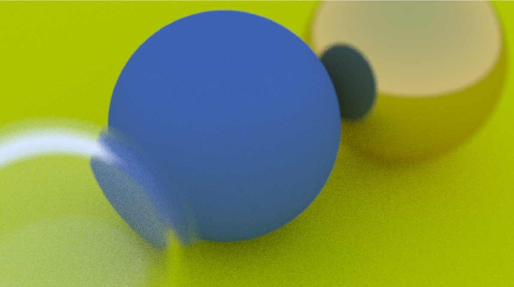

2025. github.com/CARWHO/Ray-tracing

A path tracer in C++ following Peter Shirley's Ray Tracing in One Weekend series. A learning exercise, written by hand. Some of the boilerplate came from the book.
Each pixel fires multiple rays with slight random offsets. Rays bounce around the scene accumulating colour until they hit a light source or run out of bounces.
Glass was the trickiest part. It needed Schlick's approximation for reflectance at grazing angles, otherwise the edges looked wrong.
Renders to PPM. The image above took about two minutes at 1200 by 800 with 500 samples per pixel.